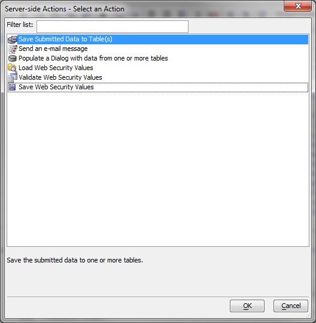
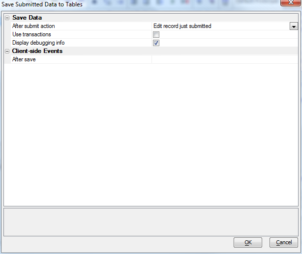

Genies for New Dialog Component
As we said in New Dialog Component V11, "at a fundamental level, binding a dialog to a database is simple, as long as you are able to write a few lines of Xbasic code. On the other hand, you don't need to write code, as Alpha Five can write the code for you."In this article, we'll see how Alpha Five can write data binding code. In Server-side Action Scripting V11, we see how Alpha Five can generate other server-side actions.
We start by inserting a new control into a dialog, selecting Create multiple new controls at once, and clicking the Populate list from a table link. In this example we picked the Customer.dbf table from AlphaSports, and left Include data binding information checked.
After pressing OK, we have all the fields we need. What's more, the field types match the corresponding types in the table. Here we see an automatically generated numeric field type.
We also have automatically generated binding information for the field, seen at the lower right.
The data binding panel of the dialog definition has four actions. We have expanded the descriptions for the two major actions.
We aren't stuck with the bindings we got from the original table. We can create the tables to match the controls we have in the dialog. This is a three-step process.

In the first step, we define our table aliases (abstract table names) and fields. Here we are setting the lengths of all the character fields at once.
The table properties are relatively simple. Here we have chosen SQL, a connection string, and a table name to create on the connection.
At this point we can actually create the table or tables, or if the database we need is not available, save the settings for later creation. The settings will be saved even if we create the table.
Going back to the data binding pane, we can now bind the dialog controls to the fields of the SQL table we just created.
The first step is to specify the tables. These are already set properly, because of the previous steps.
The second step is to bind the controls to the appropriate fields. Again, these are already set properly, because of the previous steps.
Now we need to actually generate the code. We do that with a server-side action in the afterDialogValidate event handler.

We pick the save action and check the debug option.

The server-side action goes into the event handler code as
ExecuteServerSideAction("Save Data::save_customer")
We checked the option to generate SQL debug output, so when we add a submit button and test the dialog we can see the SQL actions.